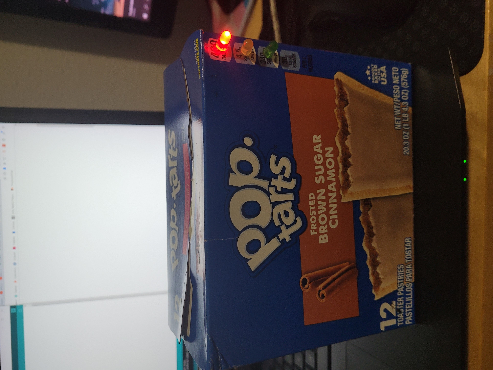
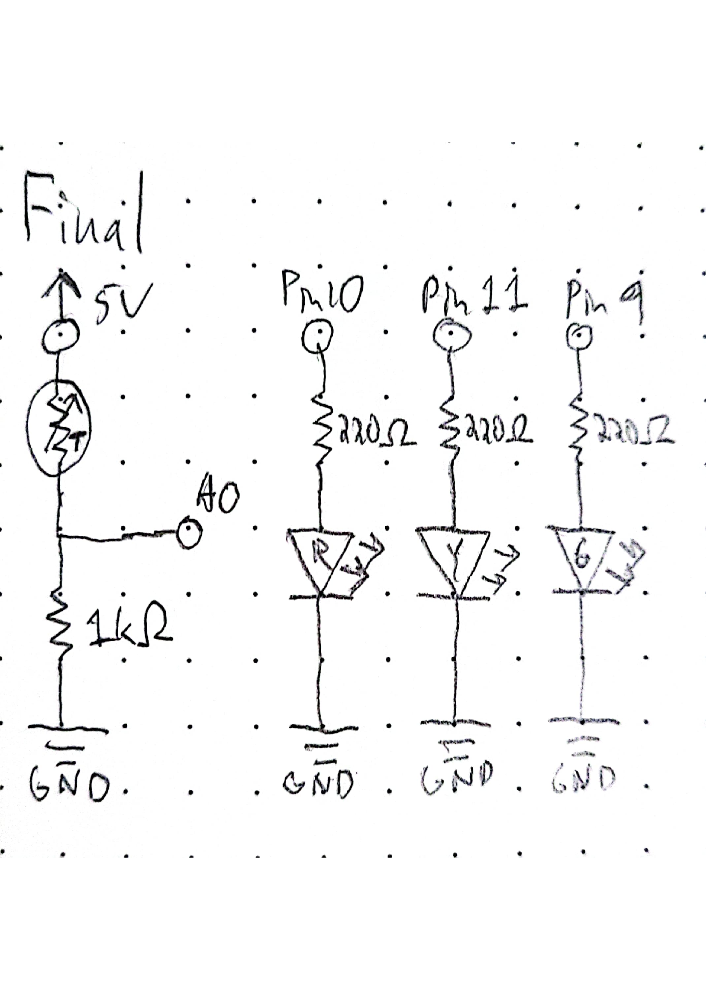
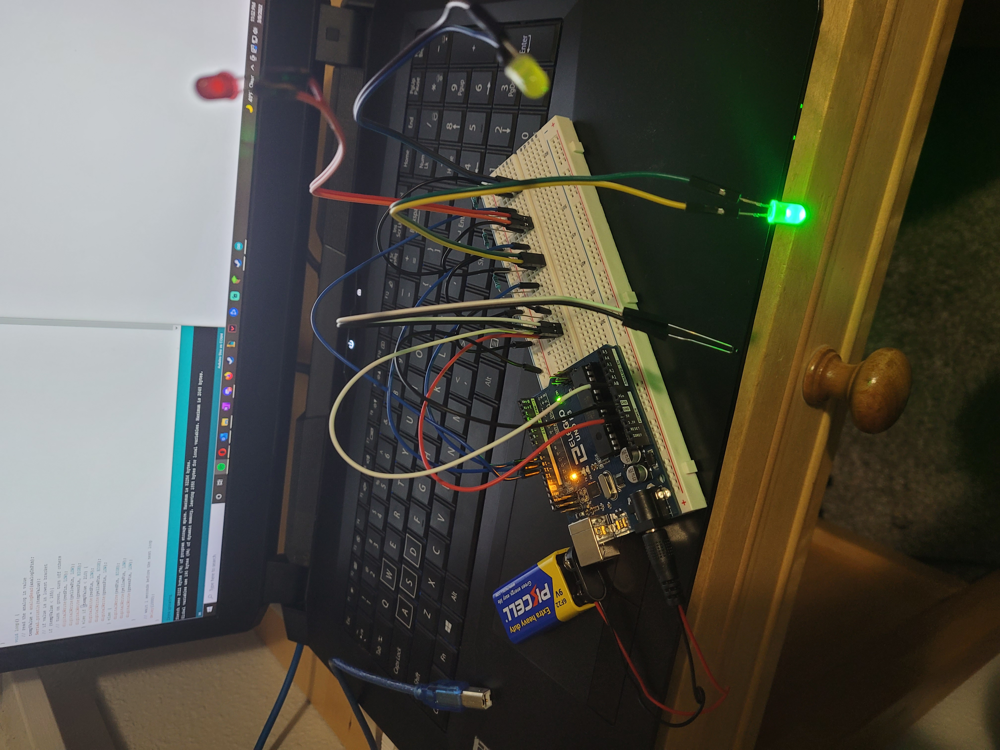

For my project I decided to make a thermometer for
my computer exhaust. I used a poptart box as an
enclosure because I had a lot lying around from my
crippling brown sugar cinnimon addiction.

I thought of using a green, yellow, and red LED to show
the temperature and punching them and a thermistor through
to the front of the box. The system is powered by a 9V
battery. The thermistor is used as the first resistor in a
voltage divider, and the fluxation in the voltage at pin A0
is used to measure the temperature. Depending on the measured
voltage, one LED is turned on and the others are turned off
every second.

I used a 1k ohm resistor for the voltage divider
because 5k was being finnicky. I used 220 ohm
resistors for the LEDs because I know they work for
all LED colors.

Blue wires connect the LEDs to output pins, and black
wires all go to ground. The red wire connects the
voltage divider to power and white connects to the
input pin. The black and white extension goes to the
thermistor, yellow/green goes to the green LED,
orange/red goes to the red LED, and blue/purple goes
to the yellow LED.
/*
Final Project
HCDE 439 Isla Wisemore
*/
//declare variables for pins
const int analogInPin = A0;
const int redPin = 10;
const int yellowPin = 11;
const int greenPin = 9;
// value read from the thermistor
int tempValue = 0;
void setup() {
// initialize serial communications at 9600 bps:
Serial.begin(9600);
//initialize output pins
pinMode(redPin, OUTPUT);
pinMode(yellowPin, OUTPUT);
pinMode(greenPin, OUTPUT);
}
void loop() {
// read the analog in value
tempValue = analogRead(analogInPin);
//print to serial for debugging purposes
Serial.println(tempValue);
// if value is in lowest bracket
if (tempValue < 185){
// turn on green, turn off others
digitalWrite(redPin, LOW);
digitalWrite(yellowPin, LOW);
digitalWrite(greenPin, HIGH);
} else if (tempValue < 210) {
// turn on yellow, turn off others
digitalWrite(redPin, LOW);
digitalWrite(yellowPin, HIGH);
digitalWrite(greenPin, LOW);
} else {
// turn on red, turn off others
digitalWrite(redPin, HIGH);
digitalWrite(yellowPin, LOW);
digitalWrite(greenPin, LOW);
}
// wait 1 seconds before the next loop
delay(1000);
}
As the thermometer enters the oven, it goes from
green to yellow to red, then back to yellow when
taken out.
Here is all the documentation for my final project!